临安·大明山
有那么一刻，感觉会就这样走到天荒地老没有尽头。 —— HML
昨天的徒步是一段可能会记得很久很久的旅程。没有记得很多风景，倒是记得很多人和事。在嬉笑怒骂中我们走入重山，攀高、远望，在雨中奔跑。
其实到现在我也不清楚征服的是那座山峰，只记得是在大明山。清晨，在领队的有序安排下我们五壮士团按时乘大巴到达了大明山景区（所谓的五壮士团是我们给自己的战号，大明山五壮士是也），开始了我们的征程。先放一张“胜利大团结”镇楼吧。
“胜利大团结”
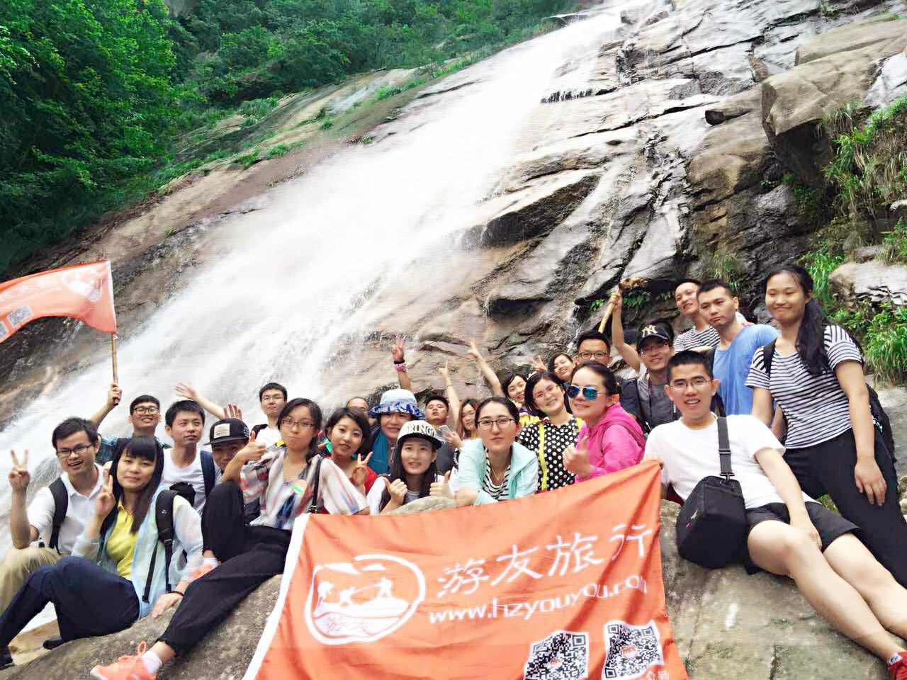
出发征途，像不像大山敞开的胸怀
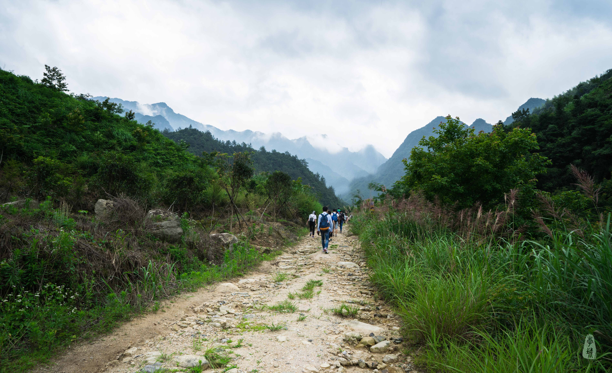
所谓的旅程，据说是心的修养，不过我们也是避不开拍拍拍的旧俗——就算眼睛能带走多少美景，岁月的橡皮擦也不会放过它们吧！瞧瞧我们这一路的走走停停。
大山在给予我们历练的前奏放了一支优美的华尔兹
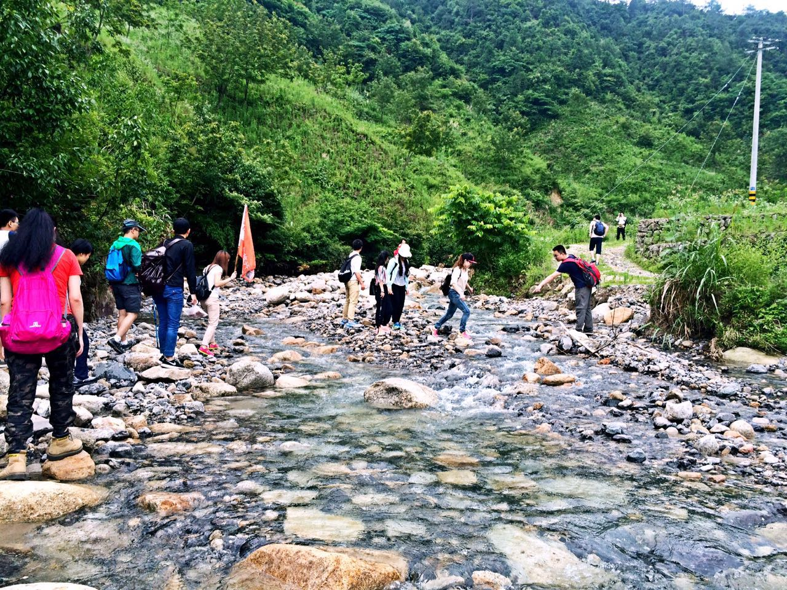
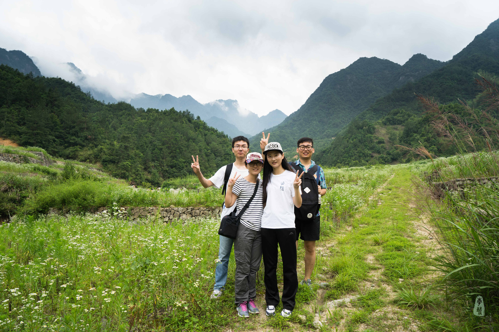
原本以为的是一眼望不到头的石板阶，原来是几乎全程手脚并用的艰难，用句网络语，“这山真的是野到没朋友”。前半段以瀑布为里程碑结束，中途还遇到了好几支队伍，从年龄来看属于中年，他们清一色专业装备、身手矫捷，真的是活力四射。
大山内的一抹彩色
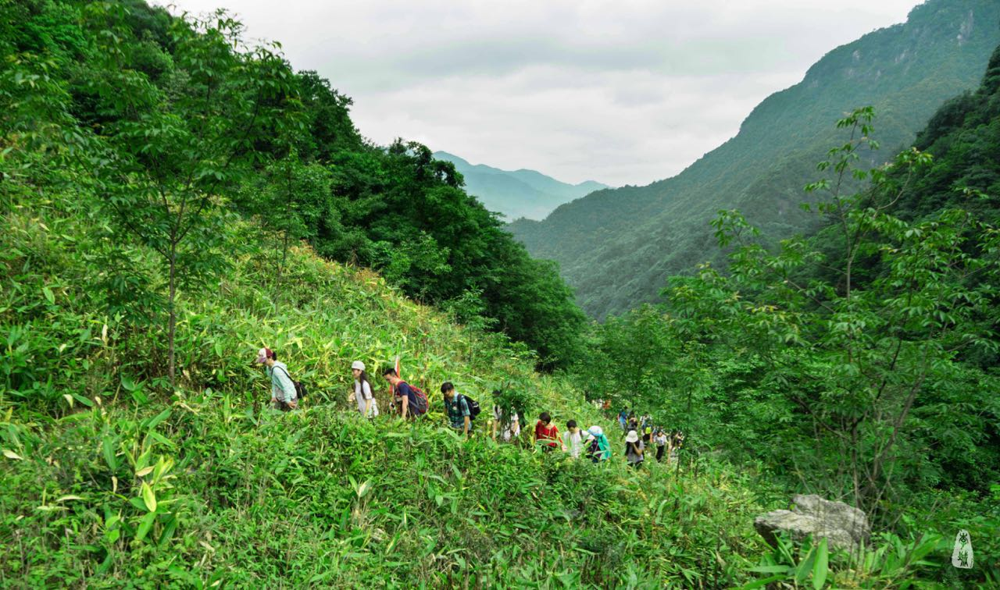
飞流直下
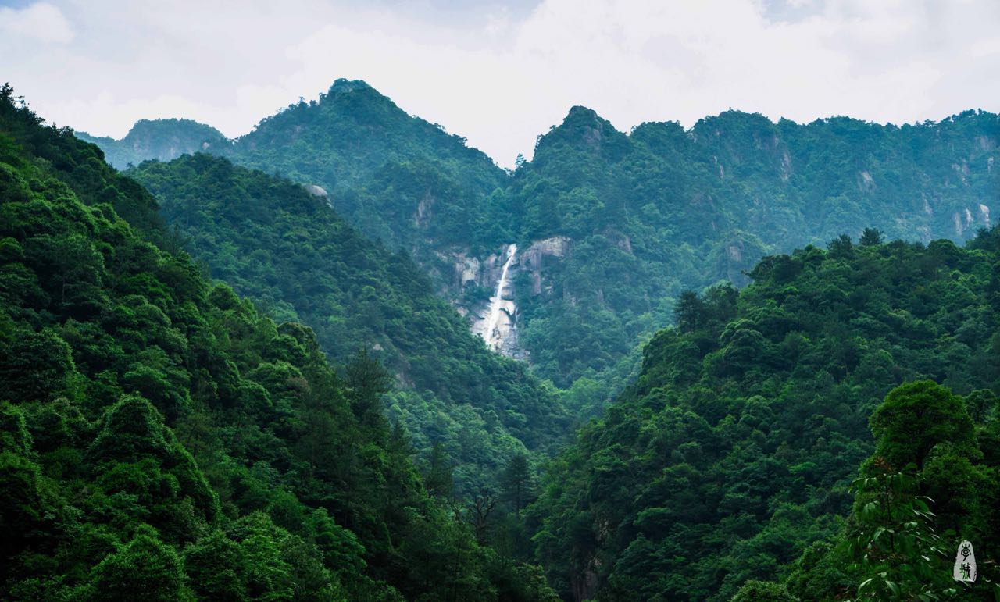
从早间10点半左右到正午12点，我们到达了瀑布下，顿觉心旷神怡，忽然有一种俯仰大地，吾辈看沧海的泠然之情。表现在行动上的就是各种角度自拍相互拍，此般美景只应天上有，人间能有几回闻，更何况可是跋山涉水历经艰辛才能见到的。
像绢流，像丝幕
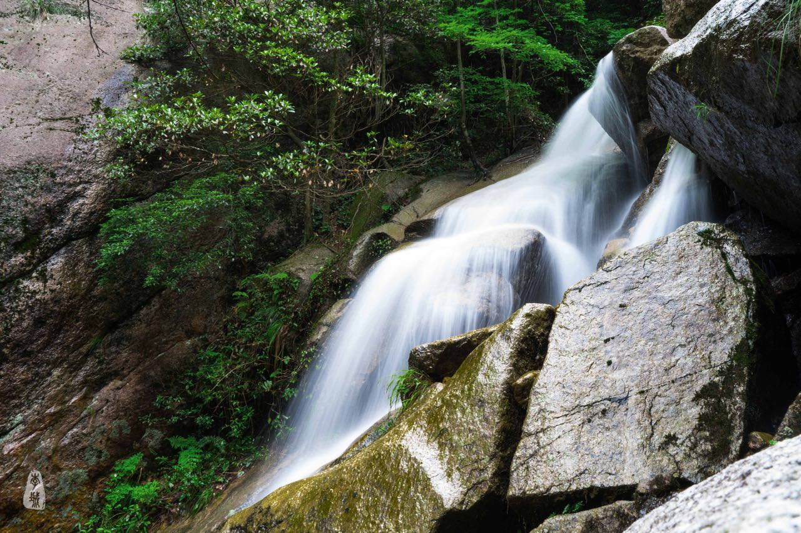
大明山五壮士集结
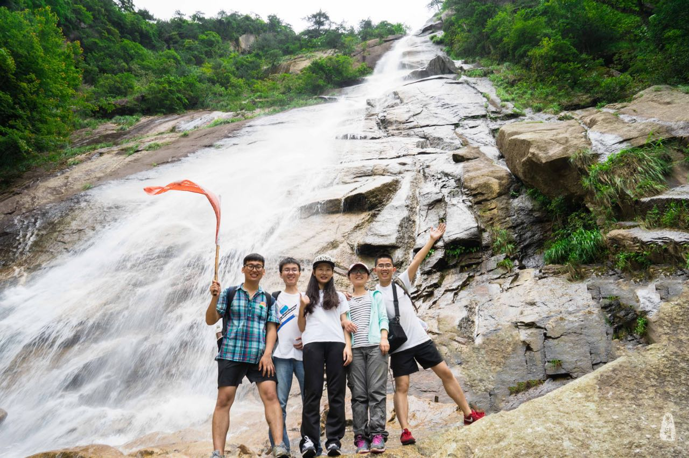
“顶”天“立”地
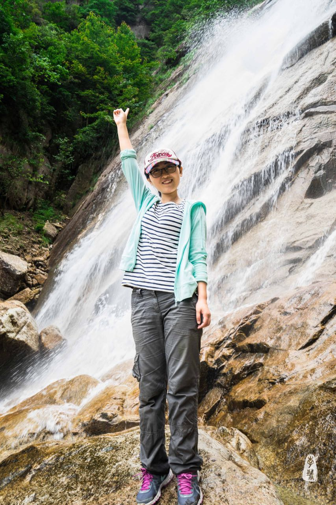
多年以后，还能回味
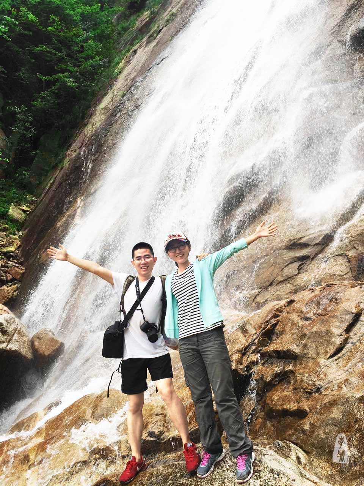
本以为此处就是终点，然而并没有，事后看来，到这里只是三分之一的艰辛，后面的路更难走。此处距离下山地点仍有2个多小时，后面的山路更抖更险，甚至需要借助绳索攀爬。好在领队几个壮实的男生冲锋陷阵，女孩子们也都顺利登顶了。可有爱，这个团队。
我们走出了“一线天”
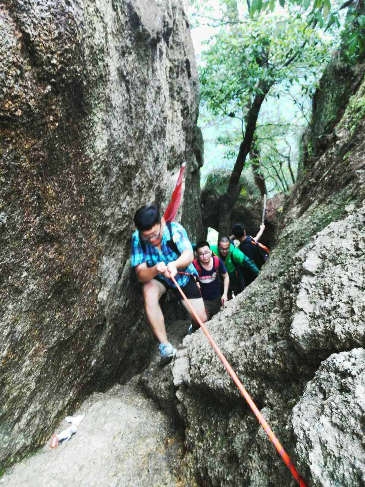
你在我身后
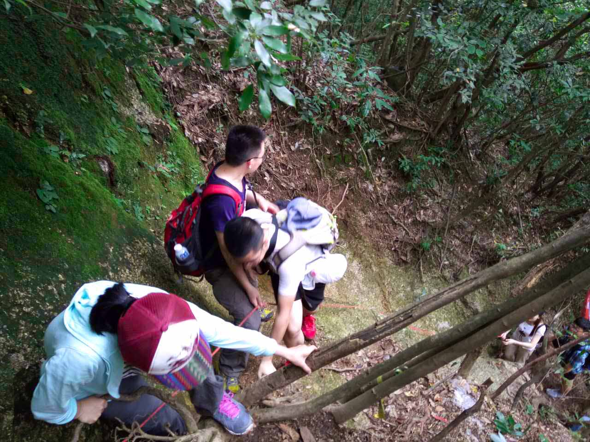
飞“度”
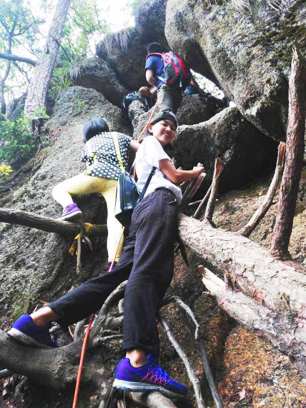
总有类似俗话说“上山容易下山难”，我想说——真是这么回事！而且不是一般难，以至于我一张照片都没记录下来，全神贯注在脚步上还是摔了3次，惨烈的是屁股和手掌。有那么一刻，我甚至觉得就要这样走下去了，天荒地老，没有尽头，走不出大山，回不到家乡。不是绝望，是山路太难走。以至于，在踩到坚实的大路的那一刻，简直可以飞起来，从来没有觉得平坦是这样的幸福。好在美景，不可辜负。
“大山的子孙呦”
远山，眉黛
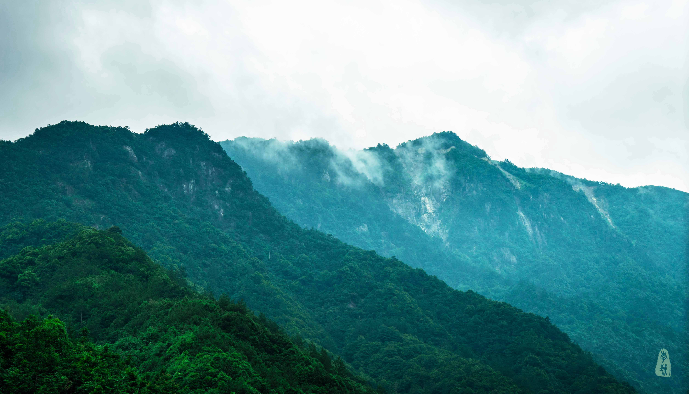
你风尘仆仆，胜利的终点
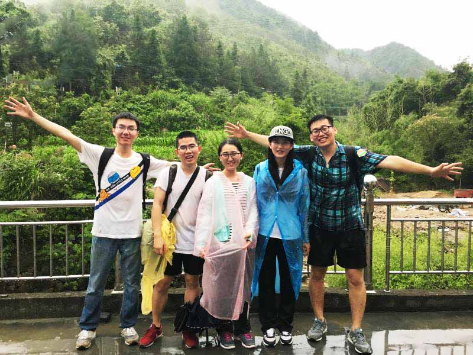
终于，在天黑前到达山脚，天公算作美——临了还给我们来了一场甘霖，让这次徒步的难度系数又加了一星，成就感也饱胀了几分。中途还出了一点小插曲，队友走岔了路，领队的不离不弃最终会合，让我对这个团队的青睐也加了几分，相信他们会做得更好。
我一直觉得安逸在这里会让自己感觉不到幸福，成长都会变慢。旅行的意义不仅仅是走过不一样的风景遇见不一样的人，最终还是让自己变得更好。你说对不对？